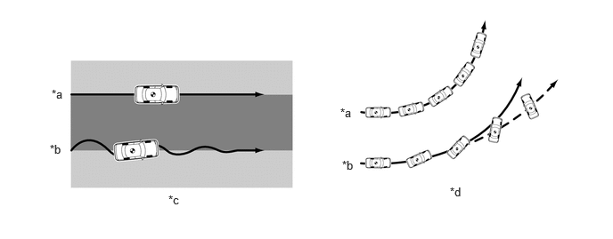

| Last Modified: 10-07-2025 | 6.11:8.1.0 | Doc ID: NM100000002K37U |
| Model Year Start: 2024 | Model: Tacoma HV | Prod Date Range: [03/2024 - ] |
| Title: BRAKE CONTROL / DYNAMIC CONTROL SYSTEMS: BRAKE CONTROL SYSTEM (for HEV Model): TRACTION CONTROL (TRAC); 2024 - 2026 MY Tacoma HV [03/2024 - ] | ||
TRACTION CONTROL (TRAC)
SYSTEM CONTROL
(a) If the drive force is excessive due to excessive depression of the accelerator pedal when starting off or accelerating on a slippery road surface, the drive wheels may slip and negatively affect acceleration and steering. By controlling the drive force and brake force of the drive wheels to limit wheel spin in accordance with the road conditions, the TRAC system ensures acceleration when starting off, straight line acceleration and turning stability.
Traction Control
|
*a |
Models with TRAC |
*b |
Models without TRAC |
|
*c |
Accelerating on Split Friction Surface |
*d |
Turning Stability on Low Friction Surface |
 |
Low Friction Surface |
 |
High Friction Surface |